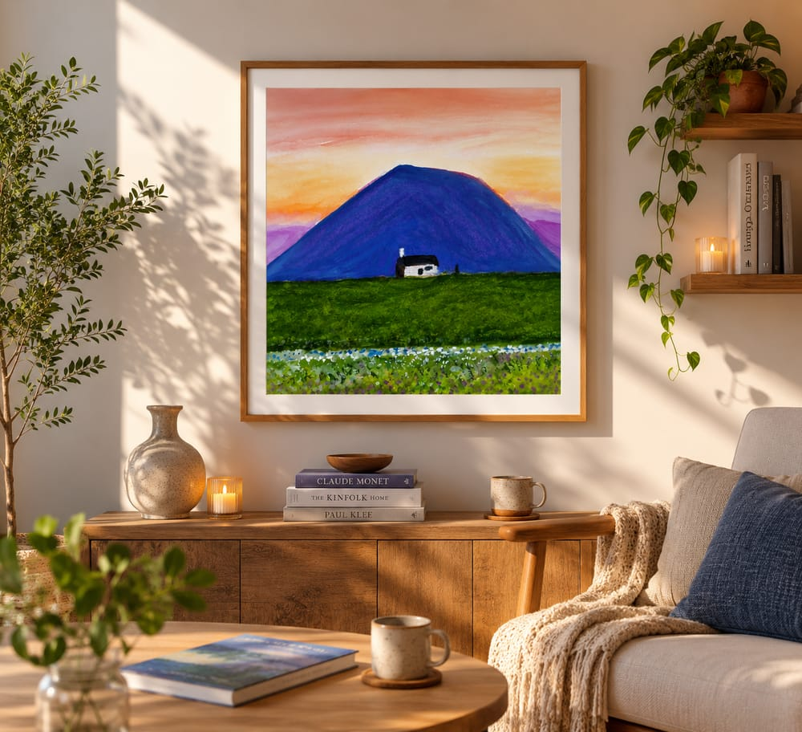
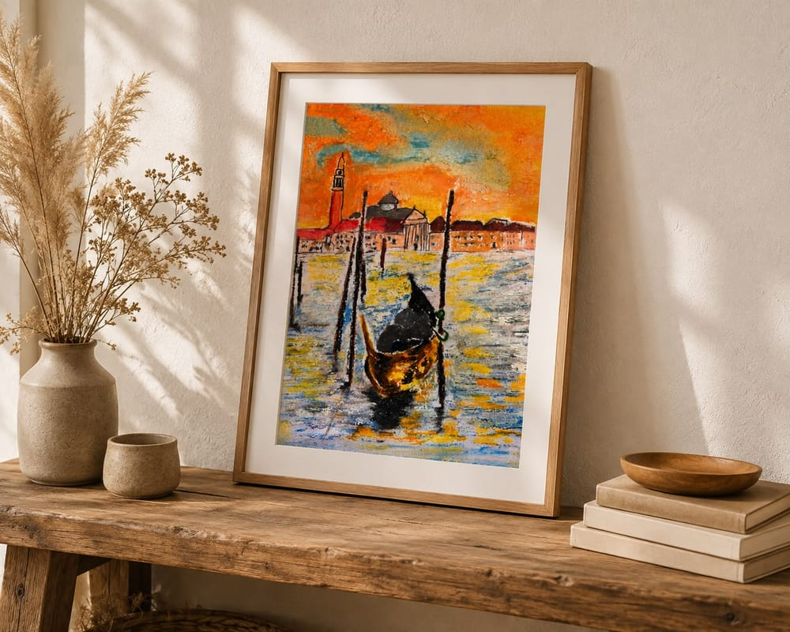
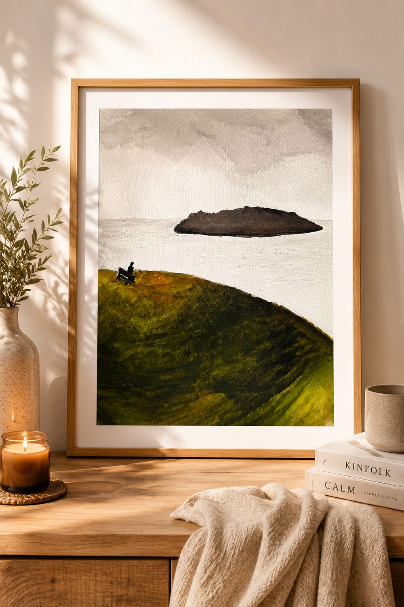

Sobre a Mari
A arte sempre me chamou. Um dia, eu respondi.
Meu nome é Mariane e, desde sempre, a arte exerce um fascínio profundo sobre mim. Eu poderia passar horas observando artistas transformarem uma folha em branco em algo capaz de despertar sentimentos, memórias e novas formas de enxergar o mundo.
Durante muito tempo, porém, acreditei que a arte não era um caminho possível para mim. Por quase 30 anos, admirei pinturas e desenhos à distância, convencida de que não tinha talento suficiente para criar. Eu me encantava com o processo, mas não me permitia experimentar.
Até que, aos 30 anos, decidi deixar o medo de lado e fazer meus primeiros desenhos e pinturas. Foi no giz pastel oleoso que encontrei minha primeira grande paixão: suas cores intensas, sua textura e a liberdade de criar sem buscar formas absolutamente perfeitas despertaram algo que sempre esteve dentro de mim.
Depois vieram a aquarela e a tinta acrílica. Estudei técnicas, fiz cursos, experimentei materiais e busquei compreender melhor não apenas como pintar, mas como encontrar minha própria maneira de me expressar.
Hoje, sinto que chegou o momento de compartilhar com o mundo tudo o que venho construindo. Minha produção está concentrada principalmente na aquarela e no giz pastel oleoso. Gosto de retratar paisagens naturais e encontro inspiração no movimento, na luz e nas cores de artistas impressionistas como Monet, Degas e Van Gogh. Também exploro a arte abstrata e moderna, permitindo que cada obra encontre seu próprio caminho.
Essa paixão também virou produtos digitais: planners inspirados em grandes pintores, para que a arte faça parte da rotina de quem organiza os próprios dias.
Para mim, a arte vai muito além do realismo. Não pinto apenas o que vejo: pinto o que sinto. Procuro criar com liberdade, sem me prender à perfeição das formas, transformando cores, paisagens e emoções em registros de um instante.
Minha história com a arte também é uma história sobre recomeços. Sobre perceber que nunca é tarde para experimentar, aprender e dar espaço àquilo que sempre nos chamou por dentro.
Não pinto apenas o que vejo: pinto o que sinto.
A arte não precisa ser perfeita para ser bonita. Ela precisa ser sentida.
Em cada pintura, procuro registrar não apenas aquilo que vejo, mas também a emoção que uma paisagem, uma cor ou um instante desperta em mim.
Entre cores e sensações
Meu processo começa com uma sensação: a luz de uma paisagem, a combinação inesperada de duas cores ou uma lembrança que desejo preservar. A partir disso, construo cada obra de forma intuitiva, deixando que o material também participe da criação.
Referência
Uma paisagem, uma foto ou uma memória que pede para ser registrada.
Paleta de cores
Testes livres até encontrar a combinação que traduz a sensação certa.
Primeiras camadas
A água ou o giz encontram o papel, ainda sem compromisso com a forma final.
Textura e movimento
Camadas se sobrepõem, o pastel se funde, a aquarela se espalha por conta própria.
Obra finalizada
O instante fica registrado, pronto para ganhar um novo lar.



Do papel à parede: cada obra ganha um novo lar e continua contando sua história.
Influências e inspirações
Lugares e temas
- Natureza e jardins
- Canteiros, folhagens e o crescimento silencioso das plantas.
- Paisagens rurais
- Casas simples, campos abertos e o horizonte ao entardecer.
- Céus e luz natural
- A forma como a luz muda uma paisagem em minutos.
Artistas
- Claude Monet
- A luz como protagonista: cada instante do dia merece sua própria paleta.
- Edgar Degas
- Movimento capturado com liberdade, sem medo do gesto imperfeito.
- Vincent van Gogh
- Cor e textura como extensão direta da emoção.
Linguagens
- Impressionismo
- A pintura como sensação, não como cópia fiel do real.
- Arte abstrata e moderna
- Espaço para que cada obra encontre sua própria forma.
Vamos criar algo juntas?
Encomendas, licenciamento, parcerias e exposições: me conte sua ideia.
Entrar em contato